Capas, ícones e widgets animados para o Notion, todos com arte original (selos, runas e emblemas desenhados em código). Para usar: na página do Notion, troque a capa e o ícone por "Link" e cole o endereço da imagem; para os widgets, use /embed com o endereço do widget.
Portal do Caos: https://paulomarcelli.github.io/Projetos/Projetos/Notion-Caos/widgets/portal/ (aceita ?nome= e ?auto=0)
Feitiço de Foco: https://paulomarcelli.github.io/Projetos/Projetos/Notion-Caos/widgets/feitico/ (aceita ?min=)
